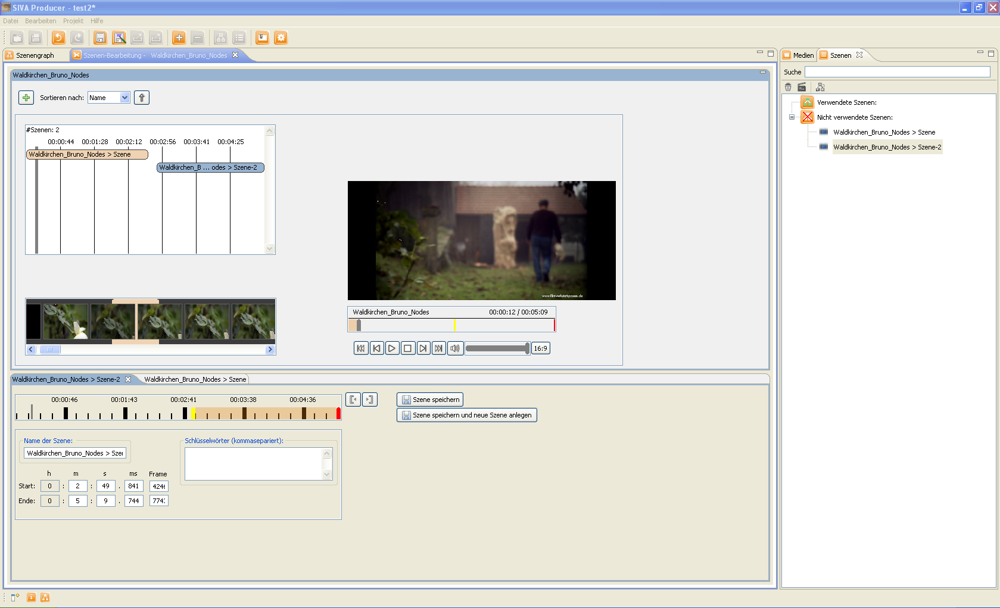

Um ein Video in Szenen aufzuteilen, wird im Medienrepository das zu schneidende Video ausgewält. Dies erfolgt durch einen Klick mit der rechten Maustaste auf das Video und anschließendes Auswählen von "Szene definieren".
Dann öffnet sich das Schneidewerkzeug und es können Szenen erstellt werden. Dazu wird auf den
"Neue Szene erstellen"-Button in der Mitte des Fensters geklickt. Im unteren Bereich des Fensters erscheint ein neuer
Reiter, auf dem Start- und Endzeit, sowie der Name der Szene festgelegt werden können. Start-
und Endzeitpunkt der Szene können auf verschiedene Weise festgelegt werden, siehe dazu in der
Hilfe
Tasks > Videoschnitt > Manueller Videoschnitt
